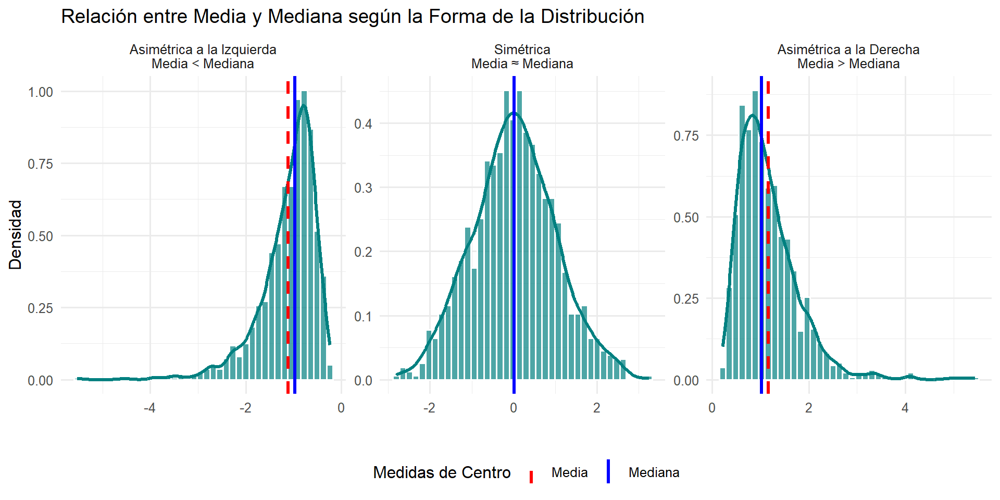
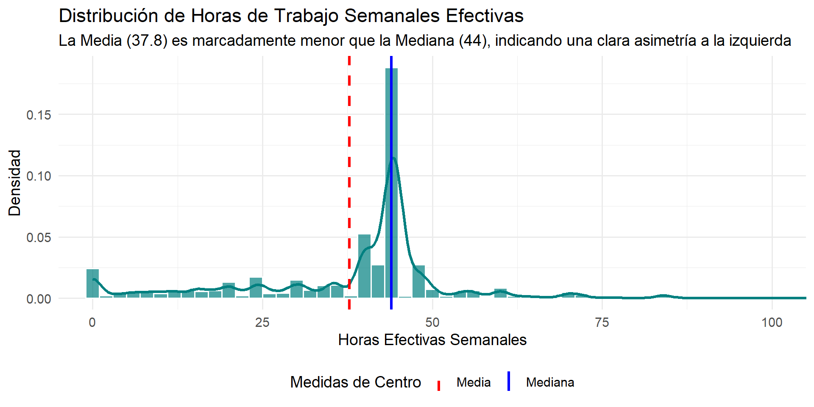
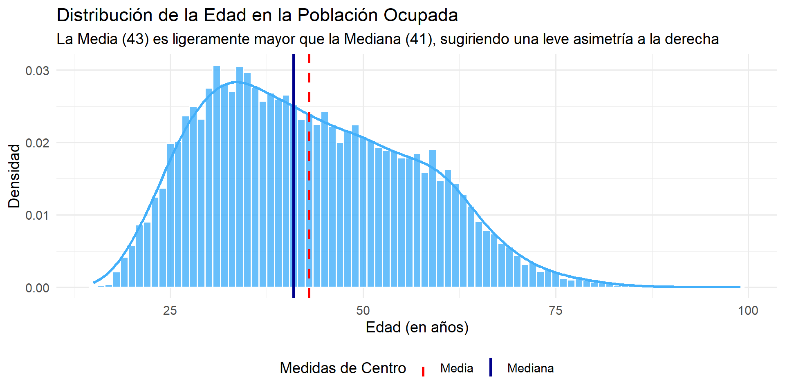
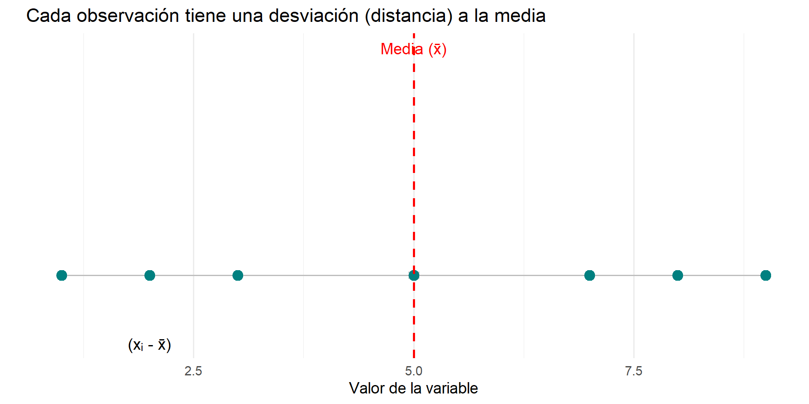
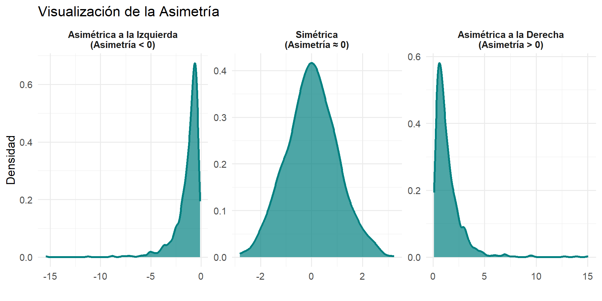

| Variable | Media | Mediana | Desv. Estándar | Asimetría | Curtosis |
|---|---|---|---|---|---|
| Edad | 43.03 | 41 | 13.27 | 0.38 | -0.59 |
| Horas Trabajadas | 37.82 | 44 | 15.79 | -0.47 | 1.72 |
| Ingreso | 897.018.71 | 611.000 | 1.043.897.45 | 14.98 | 702.66 |
La Media, la Desviación Estándar y la Estandarización
Unidad 4: Estadística Descriptiva Univariada
Gabriel Sotomayor
2025-10-27
Objetivos de la Sesión de Hoy
- Calcular e interpretar la Media como medida de centro y entender su sensibilidad a valores atípicos.
- Utilizar la relación entre Media y Mediana como una herramienta de diagnóstico para la asimetría.
- Desglosar y comprender la Varianza y la Desviación Estándar como medidas de dispersión basadas en la media.
- Comprender el propósito y la aplicación de la estandarización a través de las Puntuaciones Z.
1. La Media y su Sensibilidad
¿Por qué Necesitamos la Media?
En la clase anterior, vimos que la mediana es una excelente medida de centro, especialmente para distribuciones asimétricas, porque es robusta.
Entonces, ¿por qué necesitamos otra medida de centro?
La media (x̄), o promedio aritmético, aunque es sensible a valores extremos, posee propiedades matemáticas que la convierten en la piedra angular de la estadística más avanzada (correlación, regresión, análisis de varianza).
La media representa el “centro de gravedad” de los datos: el punto de equilibrio de la distribución donde la suma de todas las desviaciones es cero.
\[ \bar{x} = \frac{\sum\_{i=1}^{n} x_i}{n} \]
La Sensibilidad de la Media a Outliers
La principal característica de la media es que utiliza el valor de cada observación en su cálculo. Esto la hace muy informativa, pero también no robusta.
Usemos un ejemplo de ingresos (en miles de $) para demostrarlo:
Grupo Original
400, 450, 500, 550, 600
- Mediana = 500
- Media = (400+450+500+550+600) / 5 = 500
Aquí, la distribución es simétrica, y Media ≈ Mediana.
Grupo con Outlier
400, 450, 500, 550, 15000
- Mediana = 500 (no cambia)
- Media = (400+450+500+550+15000) / 5 = 3380
El outlier “arrastra” la media hacia su valor.
Usando la Media y la Mediana para Diagnosticar Asimetría
Esta diferencia en sensibilidad nos proporciona una poderosa herramienta de diagnóstico para complementar nuestros histogramas y boxplots.

Usando la Media y la Mediana para Diagnosticar Asimetría

Usando la Media y la Mediana para Diagnosticar Asimetría (II)

La línea de la media es ligeramente superior a la de la mediana. Esto confirma visual y numéricamente que la distribución de la edad de los ocupados tiene una leve asimetría a la derecha, debido a la presencia de una “cola” de personas de mayor edad.
2. Medidas de Dispersión Basadas en la Media
Hacia una Medida de Dispersión
Si la media es nuestro “centro de gravedad”, necesitamos una medida que nos diga qué tan lejos o cerca están los datos de este centro. La idea es encontrar la “distancia promedio” de cada observación a la media.
Paso 1: Calcular las Desviaciones
Para cada observación, calculamos su desviación (distancia) a la media: (xᵢ - x̄).

Problema: Si sumamos todas las desviaciones, el resultado siempre será cero, porque la media es el punto de equilibrio. ¡No nos sirve para promediar!
La Varianza (s²): “Promediando” las Distancias al Cuadrado
Para resolver el problema de los signos, elevamos cada desviación al cuadrado. Esto tiene dos ventajas:
- Todos los valores se vuelven positivos.
- Las desviaciones más grandes (outliers) son “penalizadas” con más fuerza, aportando más a la dispersión total.
La Varianza (s²) es simplemente el “promedio” de estas desviaciones al cuadrado.
\[ s^2 = \frac{\sum\_{i=1}^{n} (x_i - \bar{x})^2}{n - 1} \]
- Interpretación: Es la “media de las desviaciones al cuadrado”.
- Desventaja: Sus unidades también están al cuadrado (ej.
pesos²,años²), lo que la hace difícil de interpretar directamente.
La Desviación Estándar (s)
Para volver a las unidades originales de la variable, simplemente sacamos la raíz cuadrada de la varianza.
\[ s = \sqrt{s^2} = \sqrt{\frac{\sum\_{i=1}^{n} (x_i - \bar{x})^2}{n - 1}} \]
La Desviación Estándar (s) es la medida de dispersión más importante y utilizada.
- Interpretación CLAVE: Es la “distancia típica” o “desviación promedio” de una observación respecto a la media.
- Ejemplo con Horas Trabajadas (ESI):
- Media de horas efectivas: 37.82 horas.
- Varianza: 249.43 horas².
- Desviación estándar: 15.79 horas.
- Interpretación: Se estima que las personas ocupadas en Chile trabajan en promedio 37.8 horas a la semana, con una desviación típica de 15.8 horas.
Como la media, la desviación estándar es una medida no robusta y es sensible a los outliers.
Más Allá del Centro y la Dispersión: La Forma de la Distribución
Ya tenemos herramientas para medir el centro (media, mediana) y la dispersión (desviación estándar, IQR) de nuestros datos.
El último paso para una descripción completa es cuantificar la forma de la distribución. Mientras que un histograma nos da una idea visual, los estadísticos de forma nos dan un número preciso para describir dos características clave:
- Asimetría (Skewness): ¿La distribución es simétrica o está “cargada” hacia un lado?
- Curtosis (Kurtosis): ¿Qué tan “pesadas” son las colas de la distribución? ¿Es más propensa a generar valores extremos (outliers) que una distribución normal?
Asimetría (Skewness): Midiendo la Simetría
La asimetría mide el grado en que los datos se distribuyen de forma no simétrica con respecto a su media. Confirma numéricamente lo que diagnosticamos al comparar la media y la mediana.
- Interpretación del valor:
- Asimetría ≈ 0: Distribución simétrica.
- Asimetría > 0 (Positiva): La cola derecha es más larga. La mayoría de los datos están a la izquierda.
- Asimetría < 0 (Negativa): La cola izquierda es más larga. La mayoría de los datos están a la derecha.
Asimetría (Skewness): Midiendo la Simetría

Curtosis (Kurtosis): Midiendo las “Colas” y los Outliers
La curtosis es una medida de qué tan “pesadas” son las colas de una distribución en comparación con una distribución normal. No mide si la distribución es “puntiaguda” o “plana”, sino su propensión a producir valores extremos.
- Interpretación del valor (en exceso, respecto a la normal):
- Curtosis ≈ 0 (Mesocúrtica): Colas similares a una distribución normal.
- Curtosis > 0 (Leptocúrtica): Colas “pesadas”. Hay más probabilidad de encontrar valores muy extremos (outliers).
- Curtosis < 0 (Platicúrtica): Colas “ligeras”. Menos probabilidad de outliers que en una distribución normal.
Curtosis (Kurtosis): Midiendo las “Colas” y los Outliers

Estadísticos de Forma en la Práctica
- Edad: La Media (43.03) y Mediana (41) son cercanas, y la Asimetría (0.38) es positiva pero baja. La Curtosis (-0.59) es negativa. Esto confirma una distribución casi simétrica y platicúrtica (colas ligeras).
- Horas Trabajadas: La Media (37.82) es menor que la Mediana (44) y la Asimetría (-0.47) es negativa. La Curtosis (1.72) es positiva. Esto confirma una asimetría a la izquierda y una forma leptocúrtica (más propensa a outliers que una normal).
- Ingreso: La Media (897.019) es mucho mayor que la Mediana (611.000). La Asimetría es altísima (14.98), confirmando una fuerte cola a la derecha. La Curtosis es extremadamente alta (702.66), lo que indica que la distribución es muy propensa a generar valores atípicos (ingresos muy, muy altos).
3. Estandarización y Puntuaciones Z
3. Estandarización y Puntuaciones Z
Comparando entre Diferentes Variables
Imaginemos que queremos saber a quién le fue relativamente mejor en sus estudios. Tenemos dos estudiantes y sus notas en diferentes pruebas:
- Estudiante A: Sacó un 5.5 en una prueba de Estadística.
- (Población de la prueba de Estadística: Promedio = 4.0, Desviación Estándar = 0.5)
- Estudiante B: Sacó un 6.2 en una prueba de Metodología.
- (Población de la prueba de Metodología: Promedio = 5.8, Desviación Estándar = 0.2)
A primera vista, el 6.2 parece mejor que el 5.5. Pero, ¿considerando la dificultad y las notas de los demás, quién tuvo un rendimiento relativamente más destacado? No podemos comparar estas notas directamente porque provienen de pruebas con diferentes promedios y dispersiones. Necesitamos una escala común.
La Puntuación Z: Una Escala Universal
La puntuación Z (o valor estandarizado) recalcula el valor de una observación para expresar su posición relativa a la media y a la dispersión de su grupo.
Fórmula: \[ Z = \frac{\text{(Valor observado)} - \text{Media}}{\text{Desviación Estándar}} = \frac{x - \bar{x}}{s} \]
Interpretación Definitiva: Una puntuación Z nos dice cuántas desviaciones estándar por encima (+) o por debajo (-) de la media se encuentra una observación.
Z = 0: La observación es exactamente igual a la media.Z = +1: La observación está una desviación estándar por encima de la media.Z = -2: La observación está dos desviaciones estándar por debajo de la media.
La Puntuación Z: Una Escala Universal
Estandarizar variables es fundamental porque permite llevar distintas variables a una escala común (con media 0 y desviación estándar 1). Esto es crucial en muchas técnicas estadísticas (como la regresión o el análisis factorial) donde las variables deben tener el mismo peso o ser directamente comparables, independientemente de sus unidades o rangos originales.
Resolviendo el Problema: ¿A quién le fue mejor, Estudiante A o B?
Estudiante A (Prueba de Estadística)
- Nota (x) = 5.5
- Media (x̄) = 4.0
- SD (s) = 0.5
\[ Z\_{\text{A}} = \frac{5.5 - 4.0}{0.5} = \frac{1.5}{0.5} = +3.0 \]
Interpretación: La nota del Estudiante A está 3.0 desviaciones estándar por encima del promedio de su prueba. ¡Un rendimiento excepcional!
Estudiante B (Prueba de Metodología)
- Nota (x) = 6.2
- Media (x̄) = 5.8
- SD (s) = 0.2
\[ Z\_{\text{B}} = \frac{6.2 - 5.8}{0.2} = \frac{0.4}{0.2} = +2.0 \]
Interpretación: La nota del Estudiante B está 2.0 desviaciones estándar por encima del promedio de su prueba. También un muy buen rendimiento.
Conclusión: Aunque el Estudiante B obtuvo una nota más alta en valor absoluto (6.2 vs 5.5), en términos relativos (es decir, en comparación con el desempeño del resto de sus compañeros en cada prueba), al Estudiante A le fue mejor. Su nota de 5.5 es mucho más atípica y superior respecto al promedio de su grupo que la nota de 6.2 del Estudiante B respecto al suyo.
Cierre y Próximos Pasos
Resumen de la sesión de hoy:
- La media es el “centro de gravedad” de los datos, pero es sensible a outliers.
- La comparación Media vs. Mediana nos ayuda a diagnosticar la asimetría.
- La desviación estándar es la “distancia típica” a la media y está en las unidades originales de la variable.
- Las Puntuaciones Z nos permiten comparar valores de diferentes distribuciones al ponerlos en una escala universal.
En el práctico de hoy:
- Aplicarán estas técnicas en R para calcular e interpretar
mean(),sd()y puntuaciones Z con la Encuesta ESI.
Adelanto de la próxima clase:
- Sintetizaremos todo lo aprendido en la Unidad 4, introduciendo la “Gramática de Gráficos” con
ggplot2para construir visualizaciones de alta calidad de manera sistemática.